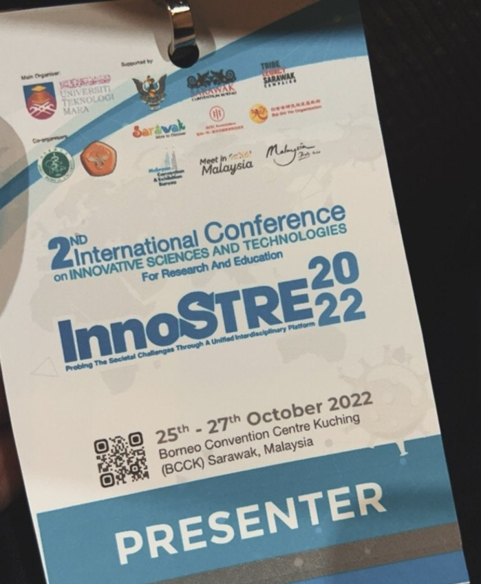
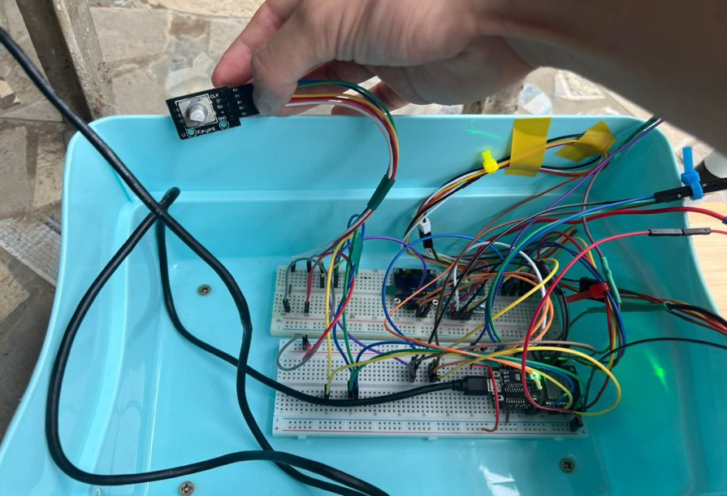
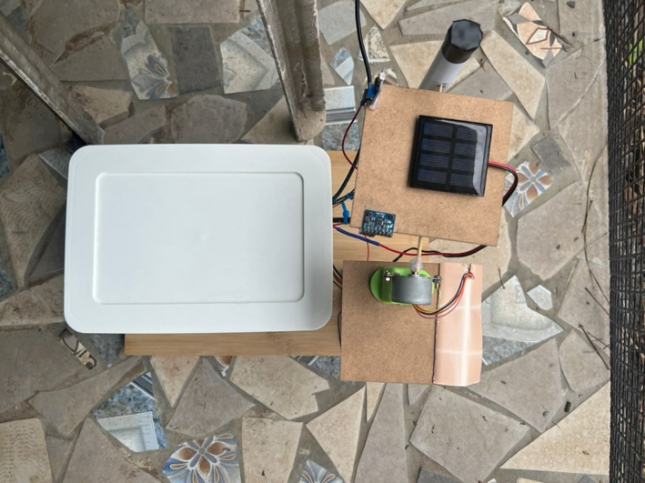

Diploma Final Year Project · Embedded Systems · IoT
Solar Tracking System

A time-scheduled solar tracking system developed as a Diploma Final Year Project, combining automated panel positioning, sensor feedback, and Wi-Fi-based monitoring. An early proof-of-concept version was presented at InnoSTRE 2022 while the physical prototype was still under development, with development continuing toward the completed prototype.
Overview
Keeping a solar panel facing the sun
Most fixed-position PV panels lose efficiency because the sun moves from east to west across the day while the panel stays still. This project builds a solar tracker that repositions a panel on a time-based schedule, checks whether it actually reached the target angle using an onboard accelerometer, and reports live status to a phone app over Wi-Fi.
The system is built around an ESP32-C3 microcontroller as its central controller, driving a stepper motor and reading from three separate sensors, with a manual override for when the automatic positioning needs correcting.
Project Milestone
InnoSTRE 2022 — Proof of Concept
During the development of this Diploma Final Year Project, the proposed solar tracking system was presented at InnoSTRE 2022. At this stage, the physical prototype was still under development, so the presentation focused on the project's concept, system design, and intended implementation.
The Problem
Why solar tracking?
Most fixed-position PV panels remain in one orientation as the sun moves across the sky, limiting the amount of sunlight they can capture throughout the day. In addition, the tracking system itself can continue consuming power outside useful operating conditions if it is not designed to enter a low-power state.
This project addresses both problems together: a panel that repositions itself to track the sun's general path through the day, and a system that drops into sleep mode when tracking isn't worthwhile, rather than running continuously regardless of conditions.
System Architecture
Sense, decide, actuate, report
The system is structured around the ESP32-C3 as its central controller, coordinating three sensor inputs, one actuator, and two output channels.
System Layers
Light, Position & Power Sensors
A TEMT6000 ambient light sensor measures lux levels to determine daylight conditions. An MPU6050 accelerometer reads the panel's actual tilt angle, so the system knows when it has really reached its target position. An INA219 sensor measures current, voltage, and power at both the panel and the battery.
ESP32-C3 Microcontroller
The ESP32-C3 acts as the system's brain, checking the time of day and sensor readings to decide the panel's target position. A rotary encoder allows manual correction if the automatic angle drifts.
Stepper Motor & Driver
A 28BYJ-48 stepper motor, driven through a ULN2003 driver, adjusts the panel's angle until the accelerometer confirms the target position has been reached.
OLED Display & Blynk App
A 0.96-inch OLED shows angle, voltage, current, and power readings on the device itself, while the Blynk app mirrors the same data remotely and sends notifications when the system enters or exits sleep mode.
Processing Workflow
Startup & Mode Select
On power-up, the stepper resets to its initial position and the system checks whether it should run in automatic or manual (encoder-controlled) mode.
Time-Based Positioning
In automatic mode, the panel is stepped to one of four scheduled positions depending on the time of day, shown below.
Angle Verification
The accelerometer confirms whether the panel actually reached its target angle, rather than assuming the motor command succeeded.
Reporting & Sleep
Readings are pushed to the OLED and Blynk. Outside operating hours, the system drops into sleep mode to conserve power.
Daily Positioning Schedule
How the panel moves through the day
Rather than tracking the sun continuously, the panel steps between four fixed positions on a schedule, based on the hardware test results recorded for the project.
| Time Window | Panel Behaviour |
|---|---|
| 8:00 a.m. – 11:59 a.m. | Positioned for morning sun |
| 12:00 p.m. | Positioned for midday sun |
| 1:00 p.m. – 4:59 p.m. | Positioned for afternoon sun |
| 5:00 p.m. – 7:59 a.m. | Parked overnight, system in sleep mode |
Implementation
Hardware components
The build combines three sensor types with a single microcontroller for control, a stepper motor for actuation, and two channels for monitoring.
Sensing & Feedback
- TEMT6000 ambient light sensor for daylight and lux readings.
- MPU6050 accelerometer for actual panel tilt feedback.
- INA219 for panel and battery current, voltage, and power.
Control & Override
- ESP32-C3 microcontroller, programmed in Arduino IDE.
- Rotary encoder for manual angle correction.
Actuation & Monitoring
- 28BYJ-48 stepper motor driven via a ULN2003 driver.
- 0.96-inch OLED display and the Blynk app over Wi-Fi.
Hardware Build
From breadboard to enclosed prototype
After the initial proof-of-concept stage, development continued toward the physical implementation of the system. The circuit was first tested on a breadboard before being fitted into a weatherproof casing for the final prototype.


Known Limitations
Where the build ran into real constraints
Several components didn't behave as originally planned, and the final build reflects the workarounds that came out of that.
Component and tooling issues
The originally planned BH1750 light sensor turned out to be incompatible with the ESP32-C3 and was replaced with a TEMT6000, which needs a mathematical conversion to derive a lux value rather than reading it directly. The ESP32-C3 also crashed when running the latest Arduino IDE (2.0.3); the same code ran without issue on an Arduino UNO, which was used to isolate the problem during development. Separately, the stepper motor heats up under load, reducing its efficiency over time, and the accelerometer's readings degrade in accuracy the longer it runs.
Recommendations
What would come next
The project report closes with three directions for improving the prototype further.
Add a rain-detection system to trigger a protective covering mechanism during wet weather.
Add remote motor control, so the panel angle can be adjusted online instead of requiring the encoder in person.
Improve build durability with more weather-resistant components and materials.
Reflection
What I Learned
This project gave me hands-on experience with embedded systems and IoT, including working through hardware that didn't behave the way the datasheet suggested it should.
Diagnosing a microcontroller-software incompatibility by isolating it on different hardware before assuming the code was at fault.
Substituting a component mid-project (TEMT6000 for BH1750) and adjusting the software to work around what the new part could and couldn't do directly.
Verifying actuator output with an independent sensor, rather than trusting that a motor command was executed correctly.
More Projects
← Back to Projects